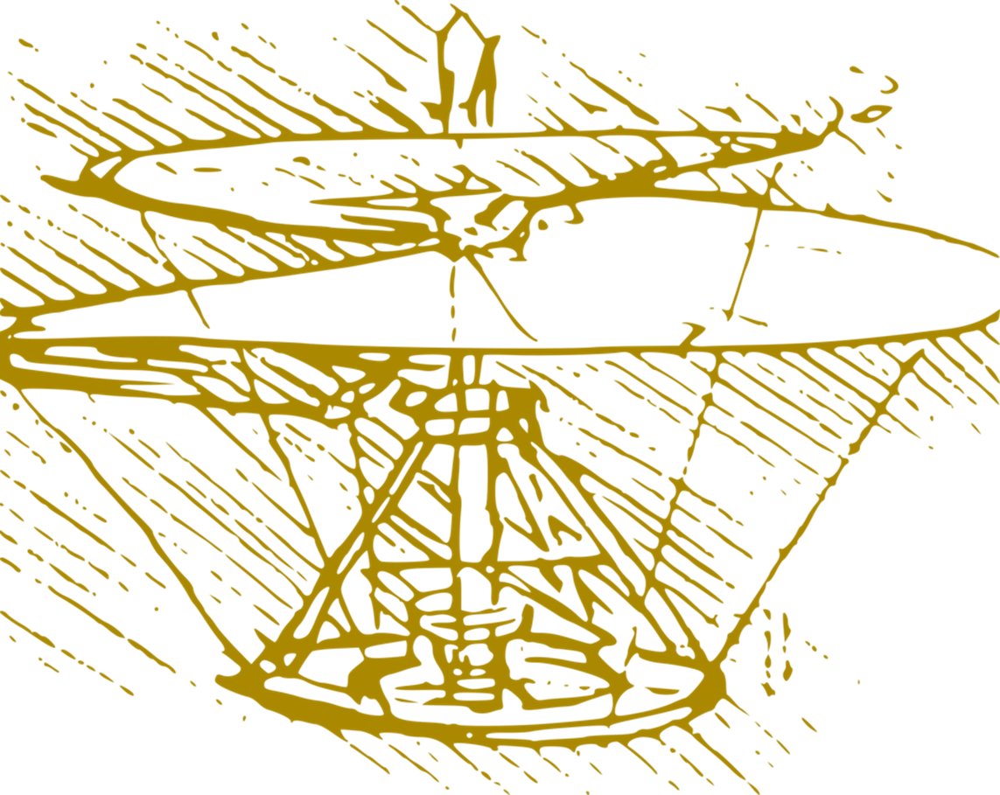

Biography

Hector O'Franco is a seasoned A.I. consultant with over a decade of experience in machine learning, data analytics, and computer vision. He has contributed to numerous innovative projects across diverse industries, including healthcare, agriculture, and insurance. Hector’s expertise lies in transforming complex data into actionable insights, driving technological advancements, and leading cross-functional teams to success. He holds a Ph.D. in Artificial Intelligence from Trinity College Dublin and has a passion for entrepreneurship, evident through his involvement in multiple start-ups.
As a software engineer with a Ph.D. in computer science, I have over six years of experience in image processing, data science, and artificial intelligence. I am passionate about analyzing human behavior through big data and developing innovative solutions that enhance user experience and satisfaction.
Find my personal articles at my professional blog
Many of you ask me about large language models with the latest hype in NLP, and what can be built with it. You can find here a toy chatGPT user interface that works with your private chatgpt key and helps you to explore response time and costs for different models.
Start-up Portfolio

Entrepreneurship quick and slow failures and successes:
| Problem to be solved |
Proposed solutions |
Initiative fate |
Year |
| Can you see the rainbow after the rain? Many people can't see it due to preventable blindness. |
iKey developed a technology for comparing retina images.
iKey |
This is confidential information |
2019-23 * |
| Helping businesses to identify their best customers. |
LoyLap is a virtual loyalty card for payments.
loylap |
The company is still trading. |
2018 * |
| Business needs to identify their best and most influential customers to promote their business. |
Predictive analytics platform built in collaboration with Technological University of Dublin. |
Aborted due to difficulties collaborating with the public administration. |
2017-18 |
| My own need for more social interaction. |
Opened a page on Airbnb to get experience dealing directly with clients and attending to their needs. |
I closed it and moved on. Not an exponential company but profitable and fun. |
2015 |
| Difficulties getting a loan at a low-interest rate and P2P loans to friends. |
Crowdlending friends: funding is provided by a network of friends at increasing interest rates from further nodes. |
Difficulties testing the market and regulations. |
2013 |
| Internet Of Things: communication between intelligent objects. |
Misakai: General library for broadcasting and filtering messages between devices. Backend as a service. |
Too difficult to work with the other founder, the company still exists without growth. |
2013 * |
| None. |
Contrastify: Search engine for public emotion on a keyword, based on sentiment analysis of tweets. |
Low usage. |
2012 |
| Males need to showcase their creativity in courtship. |
A poem editor that assists in finding the rhyming word while encouraging the writer to write more through a chatbot, also to publish the poem and deliver it with other expensive goods. |
Abandoned due to technological NLP problems, excessive distraction from incubator advisors, and personal needs (finish the PhD). |
2011 |
| Research workers need to prove what work they did and when to be able to stop patents from competitors, a document that can be used in court, among other needs for a research diary as an assistant tool. |
A digital lab notebook in which the company proves the submission times with timestamps, like a blockchain with no modifications of previous transactions. |
Abandoned due to the difficulties in identifying possible buyers. Research workers rarely want to be audited, and institutions are difficult to work with. |
2009 |